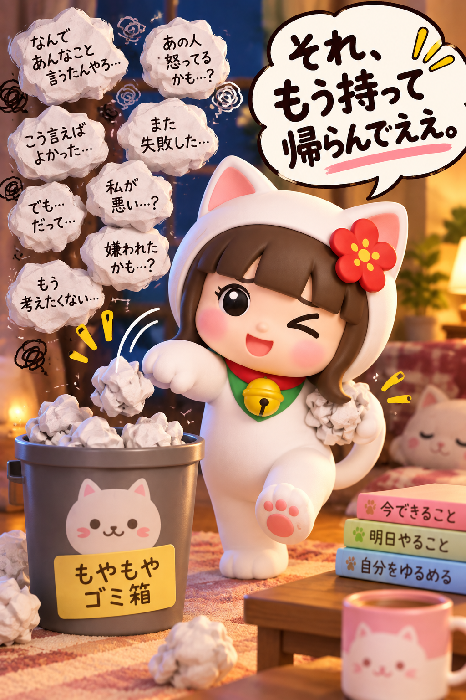

🧠 本日の脳内会議所
反省会、閉店。
誰かに話したい。
でも誰に話したらええねん。
ほな、ここで吐いていき。
今日は分析せん。説教せん。
とりあえず聞く🤣
入力内容は保存しません。ページを閉じる・再読み込みすると消えます。

今どんな感じ？
説明せんでええ。近いやつ押して。
ほな30秒、全部言え🤣
悪口でも愚痴でも言い訳でもええ。
本日は品行方正、禁止。
本日は品行方正、禁止。
30
愚痴タイム 1回目

……まだある？🤣
これ、今夜なんとかせなあかん話？
ここだけ確認しよ。反省文はいりません🤣
ほな、明日の自分に1個だけ。

本日のぐるぐる、どうする？
問題そのものを無かったことにはせん。
今夜の再放送だけ終わらせよ。
本日の脳内再放送
で、さっきよりどない？
スッキリしたことにせんでええ🤣
今のまんま押して。
0＝全然 ／ 3＝だいぶマシ

ガラガラガラ……
閉 店
これは気持ちを吐き出すためのツールで、医療・診断・治療ではありません。つらさが強い、自分を傷つけたい気持ちがある、日常生活が難しい場合は、このアプリだけで抱えず、身近な人や専門の相談先につながってください。